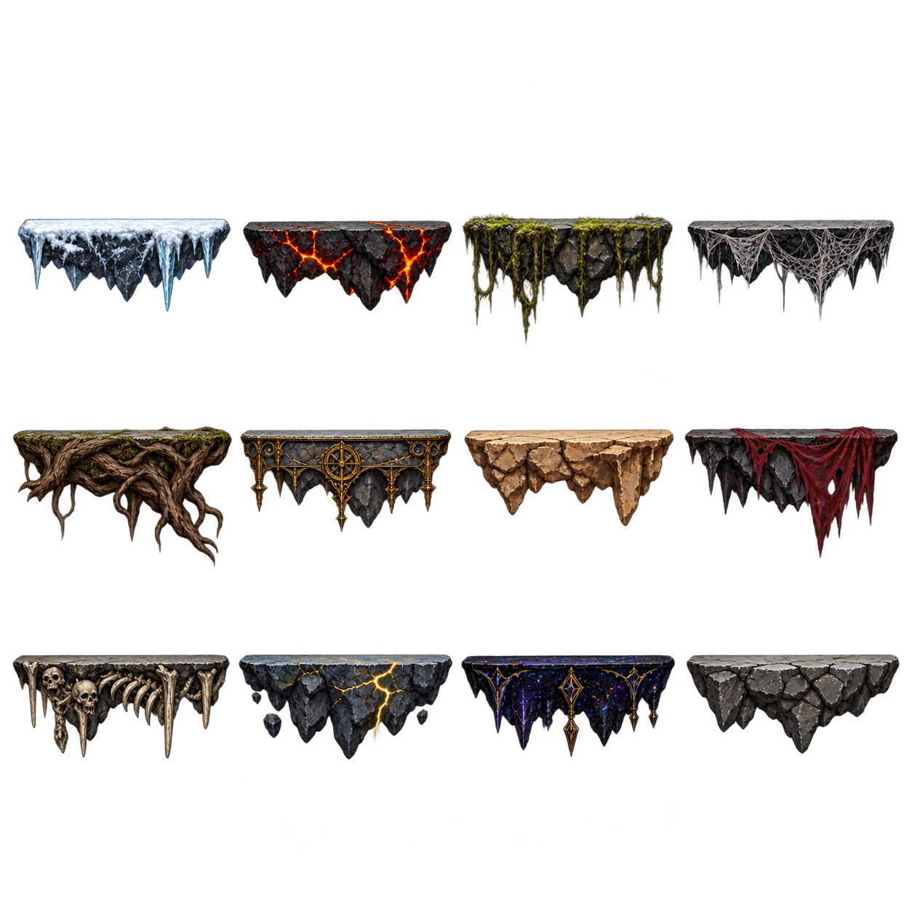
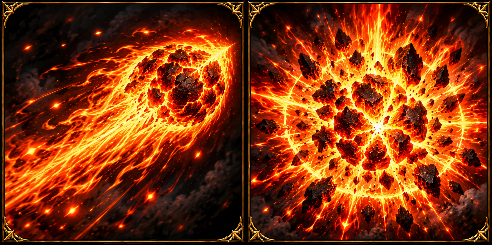

B01 · 赤尾蝎王 · 酸毒钳尾独立16格 / 4种用途B02 · 织梦蛛后 · 丝毒育巢独立16格 / 4种用途B03 · 血月蝠爵 · 血牙声波独立16格 / 4种用途B04 · 千鳞毒后 · 蛇毒腐池独立16格 / 4种用途B05 · 熔炉牛魔 · 熔岩陨火独立16格 / 4种用途B06 · 断钟石像鬼 · 石翼魔印独立16格 / 4种用途B07 · 荆冠古树 · 根刺回春独立16格 / 4种用途B08 · 霜牙狼王 · 冰牙寒息独立16格 / 4种用途B09 · 雷骨翼龙 · 雷骨电弧独立16格 / 4种用途B10 · 无面星使 · 星轨坍缩独立16格 / 4种用途B11 · 骷髅王 · 王剑亡魂独立16格 / 4种用途 稳定归途之门
16帧始终保持门已开启。游戏选用固定第5帧配合缓慢内部流光，消除外轮廓或亮度细微差别造成的闪烁。
十一关主题石台
选用platforms-v4：真实透明、连续水平顶面、厚实下垂边缘。前11格依次对应冰雪、熔炉、毒沼、蛛巢、古树、钟塔、沙陵、蝠窟、骨城、雷峰、星渊，第12格为普通石台。实际源行带和站立线见bounds-v2。

焰术师 E · 飞行与引爆

两枚887×887原始图标，左高速飞行火球，右离屏前再按E触发的原位爆破。黑金边框与旧技能图标保持一致。
制作与验证记录
全部提示词 / 源图路径 / 选用记录 · 主体边界与站立线 · 尺寸 / alpha / SHA256
全部使用内置image_gen。PNG原像素不改；只读脚本分析alpha>80最大连通域。平台v2/v3带灰底，作为失败稿留存，运行仅选透明v4；平台使用明确源rect，不能按画布均分三行。部分强特效近格边，绘制须按spriteRect隔离，保持比例与受击口/地面锚点一致。